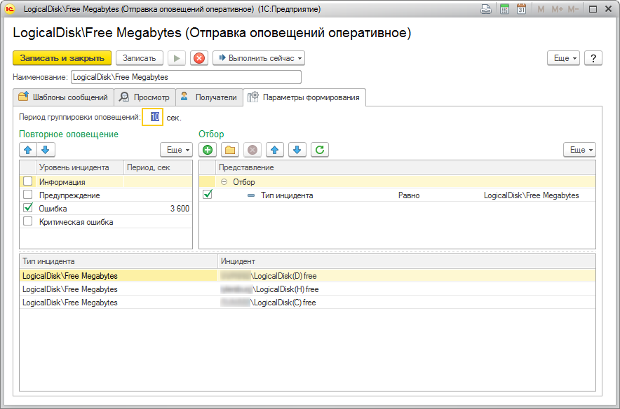
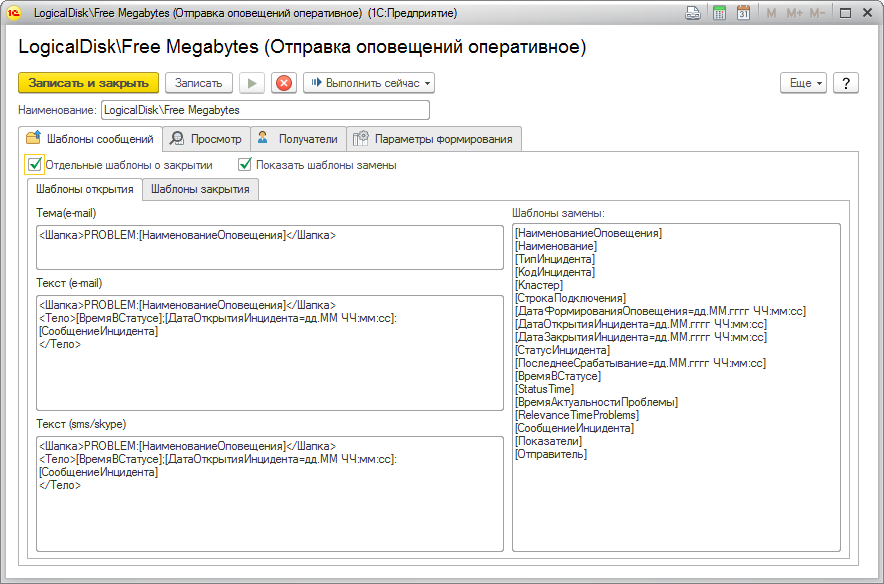
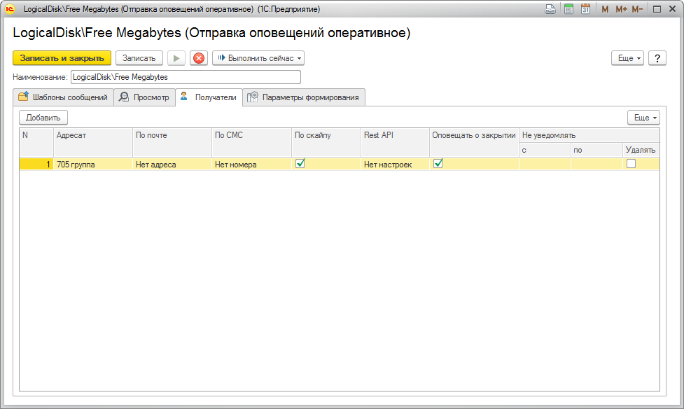

Справочник "Оповещения оперативные" предназначен для настройки оповещений об открытии и закрытии инцидентов.
Необходимо установить произвольный отбор по полям инцидента.

Текст оповещения формируется из трех реквизитов: Тема (e-mail), Текст (e-mail) и Текст (sms). При оповещении сотрудника по почте тема письма будет заполнена значением реквизита Тема(e-mail), а тело письма - значением реквизита Текст(e-mail). В случае оповещения сотрудника с помощью sms - текст короткого сообщения будет заполнен значением реквизита Текст(sms). Во всех трех реквизитах возможно использовать шаблоны замены. Для ознакомления со всеми возможными шаблонами необходимо установить флаг "Показать шаблоны замены" на закладке "Шаблоны сообщений".

Также необходимо указать список получателей оповещения и способ доставки.

Для каждого получателя отдельно можно указать диапазон времени, внутри которого оповещения не будут отосланы. За данную настройку отвечает группа реквизитов "Не уведомлять". Диапазоны вида: 23:00 .. 05:00 и 12:00 .. 13:00 отрабатывают корректно. Если начало диапазона больше, чем конец - предполагаем переход через сутки. Если в данной группе реквизитов флаг "Удалять" установлен в ИСТИНА, то все сообщения за отключенный период для данного получателя будут удаляться. В случае если "Удалять" установлен в ЛОЖЬ, то все сообщения за указанный период будут отправлены после завершения периода неуведомления.